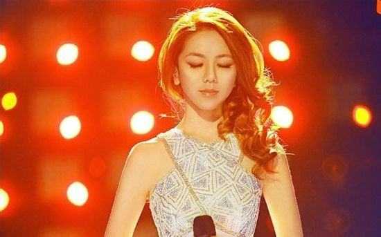
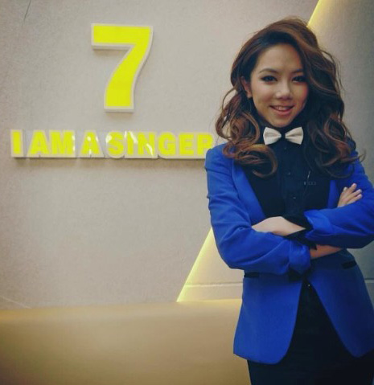
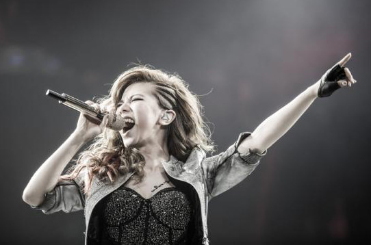
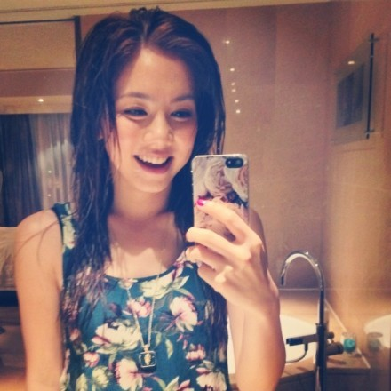

一位90后一夜爆红带来的反作用就是，可能从第二天开始，就成了众矢之的。为什么这么多人黑邓紫棋？有三个关键点：耍大牌、不尊重前辈以及炒作。而这其中，反复被提及的便是无休止出现在新闻报道中的“耍大牌”。

邓紫棋早年在香港出道，参加内地综艺节目《我是歌手》之前，已经在香港乐坛奠定了新生代唱将的地位，只是那时，内地知之者甚少。对于默默关注她很久的人来说，她火了就像小时候自己挖的秘密基地被其他小伙伴发现了一样，有种莫名的失落，又有种奇妙的愉悦。在《泡沫》之前，邓紫棋更火的歌曲应该是《爱你A.I.N.Y》。

很多人说，邓紫棋“耍大牌”的根源，是经纪人太强势。而这位经纪人，其实是她的伯乐，两人认识已经10年。当年14岁写英文歌《睡美人》参加校际歌唱比赛的她，是全场唯一演唱原创歌曲的选手，此后她被目前的经纪人，其实也是公司老板张丹看中，成为签约歌手。但目前为止，张丹的公司也仅有邓紫棋一位艺人。所以很大程度上，邓紫棋的包装路线、宣传策略，都是张丹说了算。
另一方面，邓紫棋很多负面新闻也源于其得罪了香港媒体。在内地爆红之后，本属于“香港歌手”的她并未给香港媒体自认的特殊权利，频繁将专访及出镜机会献给内地媒体，导致港媒至今仍把“黑”邓紫棋作为间歇性报道素材。期间，邓紫棋曾亲手做过饼干欲送给香港媒体，以缓解尴尬的关系，但对方未收也未领情。比如，就在不久前，一则“邓紫棋耍大牌拒接受采访却有时间外出吃炸鸡”的新闻，便来自港媒之手。好比，诶，“你怎么不接我电话呢，但却有时间去玩儿碰碰车”，可是叔叔，我和你熟吗，连叔叔我们不约的权利也没有吗。

至于被人扒出她10多岁时写的博客，骂过某位TVB女星。邓紫棋解释，是因为当时年少，喜欢的两位TVB女星存在竞争关系，故而对其中一位出言不善。其实这些并没有多重要，谁没有年少轻狂追过星，谁没有满腹辞藻献过偶像，谁没有口无遮拦当过脑残。比起如今某些组合的粉丝动辄人身攻击、人肉搜索，当年的level也就是个吐槽。
如今的歌手就像一个模子里制造出来一般，说话追求保险，热心慈善，爱护小动物，不忍心吃兔兔。啊，是多讨人喜欢，多不容易出错啊。可是10几20岁的年轻人应该这样吗？他们本人真的是这样吗？文章没被拍到出轨照片之前，是二十四孝好老公；李小璐在纵容助理打记者前，也是一副永永远远满怀无辜的脸。难道卖得一手清纯无敌、善良到蠢的白莲花才是大众期许的真爱？别傻了，世间根本没有所谓的男神女神。

有独特才华之人，多少会有一些异于常人的秉性，也常有不善伪装、真性情的流露。周星驰的电影受到影迷喜欢，而他的为人却遭到圈中老板、导演、演员，甚至身边亲友的诟病。但他才华的光彩，可以让人接受一定程度上性格的瑕疵。邓紫棋如今的成就当然远不及星爷，但作为词曲全能、唱功可嘉的90后女歌手，在整个华语乐坛都是难能可贵的，她既没有像国内部分音乐人吸毒找灵感，也没有像西半球贾斯汀比伯捣蛋目中无人，善良的国人何以不多给她一些宽容？
在她众多的翻唱歌曲中，《我是歌手》里对《存在》《喜欢你》《龙卷风》的演绎，看过节目的人自然能欣赏。而小编最爱的是她曾在红磡演唱会上唱的那首《情人》。这是一首来自Beyond的歌，黄家驹的原版很难超越，歌神张学友也曾在个唱中重新演绎。而邓紫棋的版本是个人认为所有翻唱版本中最动人的一回，那时站在红磡的她，只是个20岁的小姑娘，却能把握曲中故事的情愫。
当多数人在20出头的年纪时，也许还没有邓紫棋懂礼貌，也不及她闯出的成绩。血肉之躯、真性情通用于每个人身上，王思聪有个好爹地，随口乱喷的时候，有多少人对其纵容，又有多少粉丝紧跟其后附和“老公真棒”，可为什么偏要对一个小姑娘赶尽杀绝？
独特的风格说不上一定就是好，但也不算坏。在当下人人标榜个性，却又严重缺乏真正个性的流行乐坛新人里，邓紫棋是独树一帜的，而她的独树一帜不是靠外形古怪、奇装异服、嗓门大、说话夸张等等标新立异的行为来夺人耳目。她让人记住的，是自己写下的作品、独特的唱腔和年轻的心。